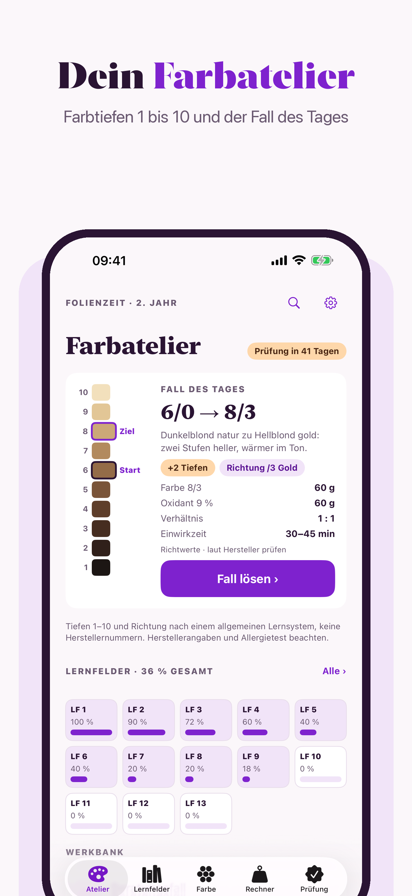
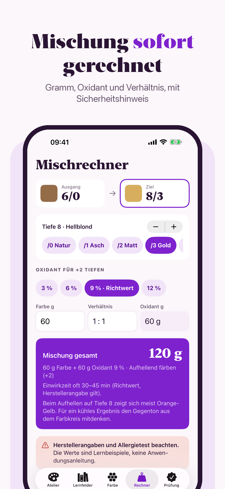
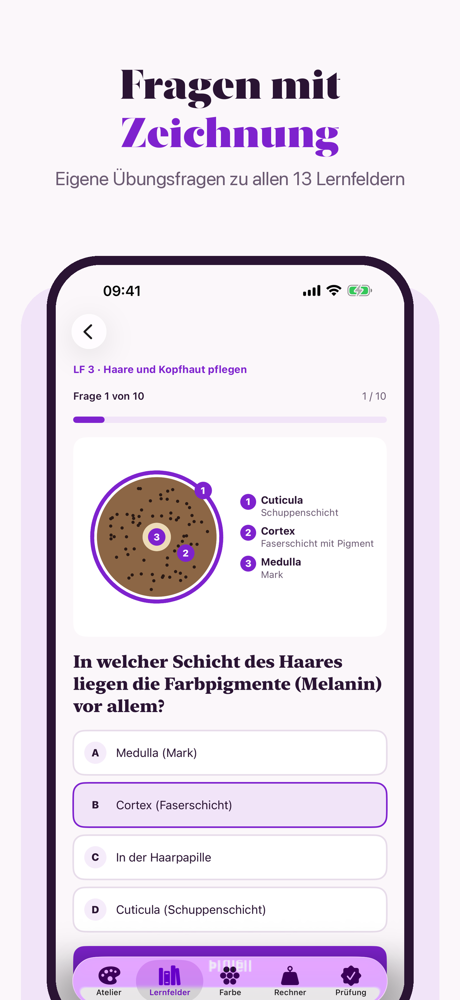

FOLIENZEIT
Gesellenprüfung Friseur: Farbe verstehen, Lernfelder üben.
Dein Lern- und Farbatelier für die Friseurausbildung in Deutschland. Ohne Konto, ohne Netz.



- Farbatelier: Farbtiefen 1 bis 10, Richtung und Fall des Tages
- Mischrechner: Gramm, Oxidant und Verhältnis mit Richtwert
- Eigene Zeichnungen: Haarquerschnitt, Graduation, Wickelpläne, eigene Skizze
- 13 Lernfelder mit eigenen Übungsfragen, Farbkreis, Beratungsfälle, Simulation Teil 1 und Teil 2
Eigene Übungsfragen, keine Original-Prüfungsfragen. Keine Verbindung zu Kammern, Innungen oder Herstellern. Bei Farbe und Dauerwelle immer Herstellerangaben und Allergietest beachten.